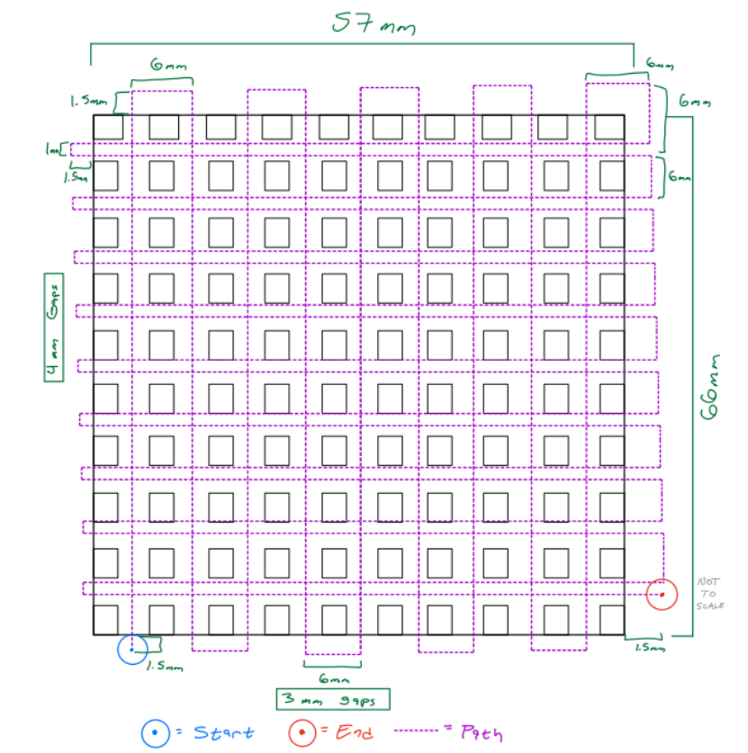

2024 · DESIGN · MANUFACTURING
Heat Sink Design
Mechanical design project focused on developing a heat sink geometry for thermal management.

Overview
This project explored the mechanical design of a heat sink and the relationship between geometry and thermal management.
Design
CAD methods were used to develop the heat sink geometry while considering manufacturability and thermal performance.
Manufacturing
Manufacturing considerations were incorporated into the design process to create a practical component.
PROJECT DOCUMENT
Heat Sink Design
OPEN REPORT ↗